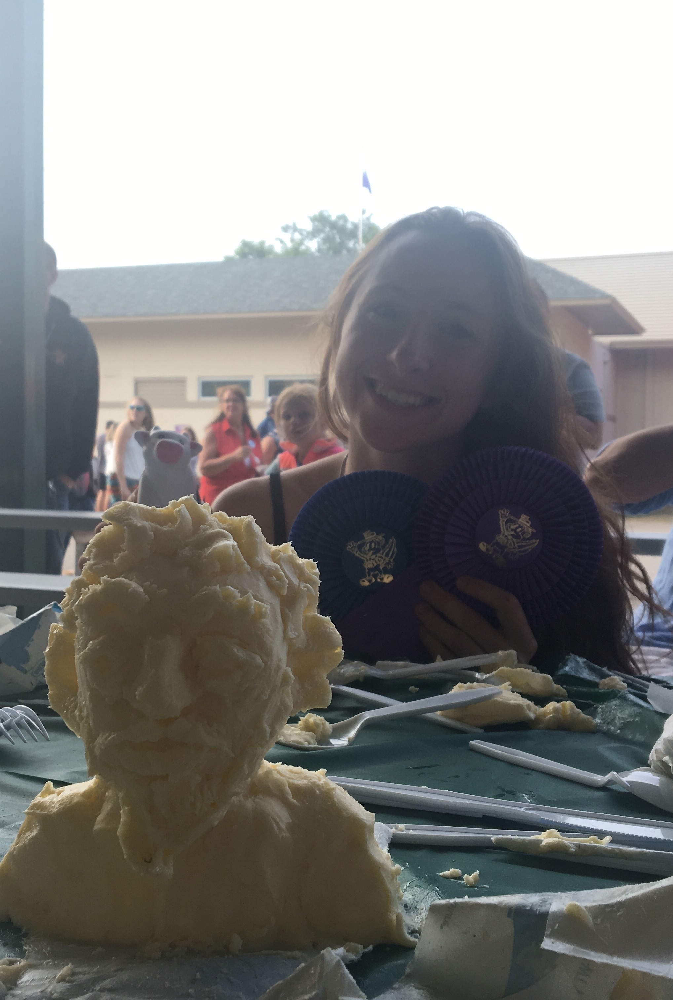
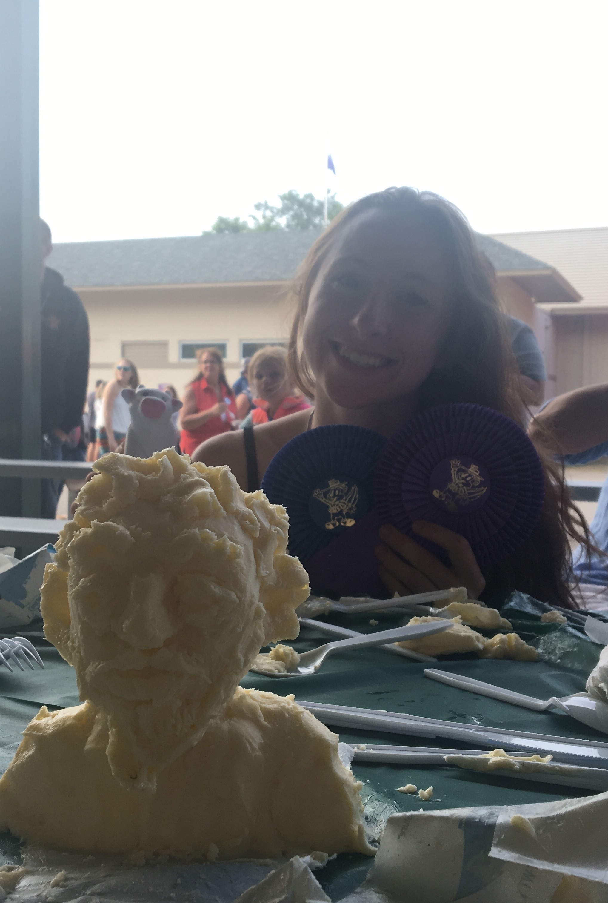

Personal
This section really exists so that I can show the world that I won the Amateur Butter Carving Contest at the Minnesota State Fair in 2017.
My butter sculpture and I.
This section really exists so that I can show the world that I won the Amateur Butter Carving Contest at the Minnesota State Fair in 2017.
My butter sculpture and I.